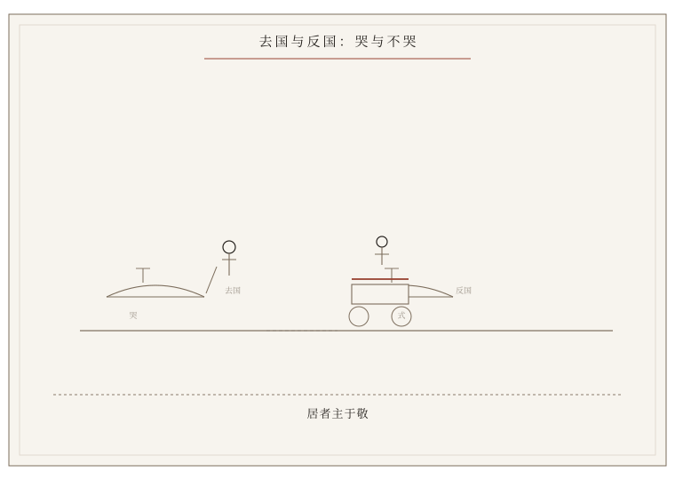

檀弓下 · 四·五十九 · 第 384 课
子路去鲁，谓颜渊曰：「何以赠我？」曰：「吾闻之也，去国，则哭于墓而后行；反其国，不哭，展墓而入。」谓子路曰：「何以处我？」子路曰：「吾闻之也，过墓则式，过祀则下。」
说什么事：子路要离开鲁国，问颜渊：「拿什么送我？」颜渊说：「我听说：离开本国，要先到先人墓上哭一场再走；返回本国，不哭，只察看墓地然后进城。」颜渊又问子路：「拿什么安顿我？」子路说：「我听说：经过别人的坟墓要凭轼致敬，经过祭祀之处要下车。」
落在哪一层：以「赠言」代「赠物」。走的人与留的人，各留一句可守的话。
为何编在此位：上批论「守位置」，此节论「离与归的位置」——一个人走出国门与回到国门，礼各有其向。
【经】子路去鲁，谓颜渊曰：「何以赠我？」曰：「吾闻之也，去国，则哭于墓而后行；反其国，不哭，展墓而入。」谓子路曰：「何以处我？」子路曰：「吾闻之也，过墓则式，过祀则下。
【注】赠，送。／无君事，主于孝。哭，哀去也。展，省视之。／处犹安也。／居者主于敬。
【疏】此一节论礼敬祀墓之事，各依文解之。／注「无事君，主于孝」。正义曰：若有君事去国，则不得哭墓，故上《曲礼》云「已受命，君言不宿于家」，是不哭于墓。／「过墓则式，过祀则下」。「墓」谓他家坟垄，「祀」谓神位有屋树者，居无事，主于恭敬，故或「式」、或「下」也。他坟尚式则已，先祖坟墓当下也。
去鲁 离开鲁国。
赠 赠言，送别之语。
去国 离开本国。
哭于墓 在先人墓上哭。
反其国 返回本国。
展墓 察看墓地。展，省视。
处我 安顿我，即教我在家怎么做。处犹安。
式 凭轼，俯身扶车前横木致敬。
祀 有神位、有屋有树之处。
下 下车。
子路要离开鲁国，对颜渊说：「拿什么送我？」颜渊说：「我听说：离开本国，要先在墓上哭一场再走；返回本国，不哭，只察看墓地然后进城。」颜渊又问子路：「拿什么安顿我？」子路说：「我听说：经过别人的坟墓要凭轼，经过祭祀之处要下车。」
此章记两人互赠。一个要远行，一个要留下；临别之时，都不赠物，各赠一句可守的话。
一问一答，两问两答，四句而已，而成一篇。
第一层 「何以赠我」：赠言之始 古之赠别，本有物（车马、束帛），亦有言。
子路所要者不是物，是一句能带走的话。 此一问，立下赠别之正：物可尽，言可久。
第二层 「去国则哭于墓而后行」 要离国，先去墓上哭。
此一动作的理由，注云「无君事，主于孝」——没有君命在身，便以孝为主。
此一分别极要紧：若奉君命出使，则不得私哭（疏引《曲礼》「已受命，君言不宿于家」）。同一离国，因有无君命而礼不同。
第三层 「反其国，不哭，展墓而入」 回来时不许哭，只许看。
去时哭，是以此为别；归时不哭，是以此为归。 若归亦哭，则归亦成别。
「展」字最重：展者，省视也。看一看还在不在，就够了，不必再痛一次。
第四层 「何以处我」：留者的功课 颜渊反过来问子路：我留下，怎么自处？
此一问把赠别变成互勉。 行路者有行路者之礼，居守者有居守者之礼，无人可只受不赠。
第五层 「过墓则式，过祀则下」 子路所答，两条：过墓凭轼，过祀下车。
疏辨二者之别：「墓」谓他家坟垄，「祀」谓神位有屋树者。又云「他坟尚式则已，先祖坟墓当下也」——对别人的坟只式，对自己的先祖则当更下。
此一层最细：敬有等差，不因一概而废其轻重。
第六层 「居者主于敬」 注四字，是此节的落点。
行者主于孝，居者主于敬。一个人离开，礼向死者；一个人留下，礼向在者。
与今日何干 今人离别，多在饭桌上说保重；留下的人，少有功课。
此章给一句：走的人要哭一场再走，留的人要见墓即俯身。
| 左 | 右 |
|---|---|
| 去鲁 | 行者 |
| 何以赠我 | 求言不求物 |
| 去国哭于墓 | 主于孝 |
| 反国不哭 | 归不是别 |
| 展墓而入 | 省视而已 |
| 何以处我 | 留者亦有功课 |
| 过墓则式 | 对人 |
| 过祀则下 | 对神 |
| 居者主于敬 | 落点 |
画通向城外的道路一段，视点平视。画面左侧道路旁有一座土坟，坟前立一低碑；坟前立一人形，身形向外，作将行未行之状，肩后斜挎一束行装。画面右侧另有一座坟，坟前有一辆单辕小车，车上立一人形，双手前扶车前的横木，作俯身之状。两坟之间画一道断续的路线。不画文字。赭色只用在那俯身者手扶的横木上。
